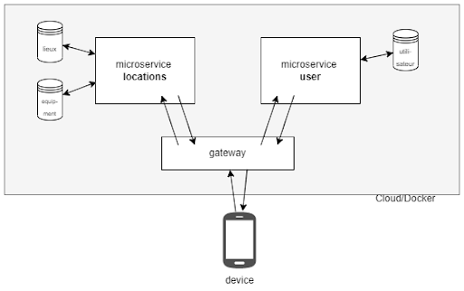

Street Workout Finder
- projet
- Thibault Adelain
- Thomas Duroy
- Jeffrey Edisah
- Kasimir Romer
Le projet pour trouver des installations sportives en plein air près de chez vous !
Le projet
Ce projet consiste a développer une application de géolocalisation d'installations sportives en extérieur dans la ville de Marseille. L'objectif de cette application est de permettre aux utilisateurs de localiser facilement les installations de street workout à proximité de chez eux, de connaître les équipements présents sur chaque site, leur état, leur fréquentation, etc. Nous avons adopté une méthode de Design Thinking pour concevoir une application en essayant de répondre aux besoins des utilisateurs de manière optimale. L'approche communautaire de l'application permettait à tous les utilisateurs de contribuer en ajoutant des installations à l'application, en laissant des notes, des photos et des commentaires, créant ainsi une base de données dynamique et vivante.
Ce projet vise à s'inscrire dans le thème de l'autonomie numérique. En effet, cette application permet aux utilisateurs de trouver et d'utiliser des équipements sportifs gratuits et accessibles à tous, sans avoir besoin d'adhérer à une salle de sport ou de payer des frais d'abonnement. De plus, l'application finale permettra également de partager des conseils et des astuces pour l'utilisation des équipements sportifs, ce qui peut aider les utilisateurs à s'approprier les installations et à les utiliser de manière efficace dans une démarche d'autonomie. Enfin, la communauté d'utilisateurs de l'application est au cœur du processus de création de contenu et de partage d'informations, favorisant ainsi la participation citoyenne et l'autonomie vis-à-vis des grandes plateformes du numérique.
On présentera ici les différentes étapes du projet, de la conception à la réalisation, en décrivant les méthodologies utilisées, les challenges rencontrés et les résultats obtenus
Architecture de l'application

Le stack technologique de l'application web Street Workout Finder est conçue pour offrir aux utilisateurs une expérience dynamique, évolutive et performante. Le stack comprend une combinaison de technologies populaires qui conviennent aux exigences du projet, même si le principal objectif derrière le choix de ce stack a été de se former au développement web à travers des technologies innovantes.
Le front-end de l'application est construit à l'aide de React, une bibliothèque JavaScript pour la construction d'interfaces utilisateur. Le front-end fera également office d'une passerelle API. Elle est utilisée pour gérer la communication entre les différents microservices de l'application. Elle sert de point d'entrée pour l'application côté client et achemine les demandes vers le microservice approprié.
Le microservice "Lieux" est construit à l'aide de Flask, un framework Python web léger, et de MongoDB, une base de données NoSQL. Flask est un framework léger et facile à utiliser et est bien adapté aux applications de taille petite et moyenne. MongoDB est un choix populaire pour le stockage de grandes quantités de données et est bien adapté aux données non structurées.
Le microservice "Utilisateurs" est construit à l'aide de Node.js, d'Express.js, et de MongoDB. Node.js est un choix populaire pour construire des applications évolutives et performantes, et Express.js est un cadre web largement utilisé pour Node.js. MongoDB est également utilisé pour stocker les données du microservice Utilisateurs.
Finalement, les microservices et la passerelle API sont conçus pour être encapsulés dans des conteneurs Docker, dans un objectif futur de dépoloiement. Docker permet une certaine flexibilité dans les options de déploiement et la possibilité de lancer les microservices et la passerelle sur n'importe quelle plateforme, quelle que soit l'infrastructure sous-jacente. Il est ainsi facile de faire évoluer et de gérer l'application au fur et à mesure de sa croissance. L'utilisation de conteneurs Docker garantit également la cohérence entre les différents environnements, ce qui rend souvent le processus de déploiement plus facile.
Poster

Déroulé
Phase de réflexion, Design Thinking
19/09/2022 - 05/12/2022
Dans la phase de réflexion, nous nous sommes concentrés sur les étapes suivantes :
- Recherche des besoins utilisateurs (avec des entretiens)
- Recherche de l'état de l'art
- Création du design dans Figma
- Création de l'architecture de l'application (on a décidé d'utiliser une architecture en microservices)
Sprint 1
06/12/2022 - 03/01/2023
Dans le premier sprint, nous avons réalisé les étapes suivantes :
[x] Création du repo GitHub : https://github.com/JeffreyEdisah/Street-Workout-Finder
[x] Création microservice utilisateur et authentification
[x] Début du développement du microservice lieux
Nous avons crée un projet sur GitHub.
Sprint 2
03/01/2023 - 07/02/2023
Dans le deuxième sprint, nous avons réalisé les étapes suivantes :
[x] Finir le microservice lieux
[x] Déploiement du microservice lieux sur AWS Lambda
Sprint 3
07/02/2023 - 28/02/2023
Dans le troisième sprint, nous avons réalisé les étapes suivantes :
[x] Début du travail sur le front en React
[x] Création de la carte avec Leaflet
[x] Ajout des pages Login et Register
[x] Ajout de la page de description d'un lieu
Sprint 4
28/02/2023 - 21/03/2023
Dans le quatrième sprint, nous avons réalisé les étapes suivantes :
[x] Refactoring du microservice lieux
[x] Ajout du menu à la carte
[x] Liaison du front avec les différents microservices
[x] Ajout d'une gateway entre le microservice lieux et le microservice utilisateurs
Sprint 5
28/02/2023 - 21/03/2023
Dans le quatrième sprint, nous avons réalisé les étapes suivantes :
[x] Divers ajustements CSS
[x] Création d'un docker compose avec 3 services : le front, le microservice lieux et le microservice utilisateurs